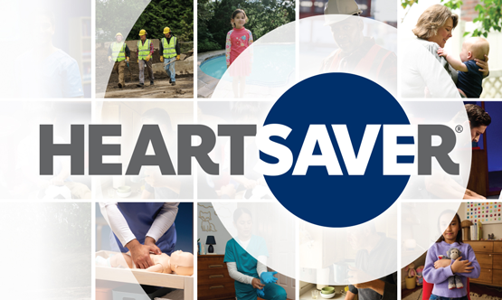
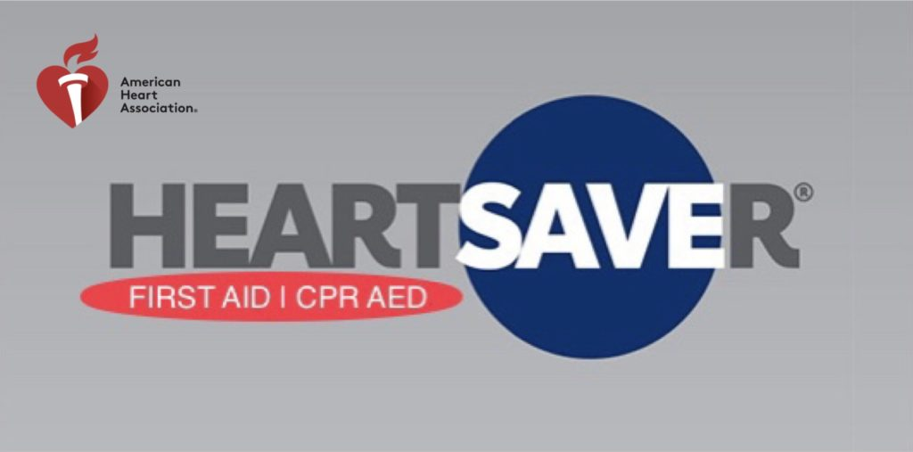
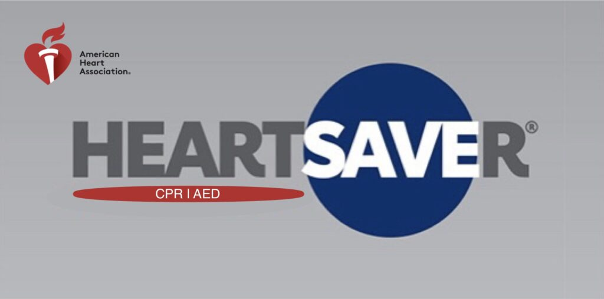
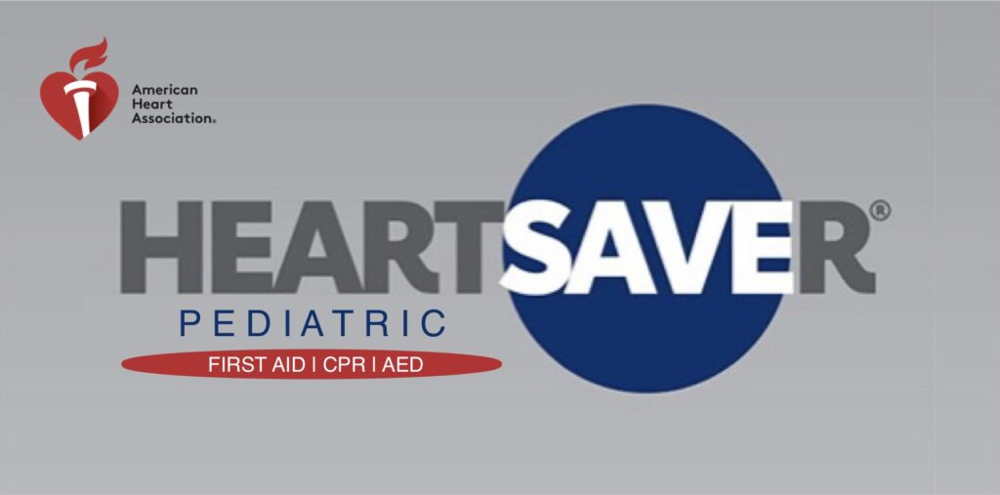
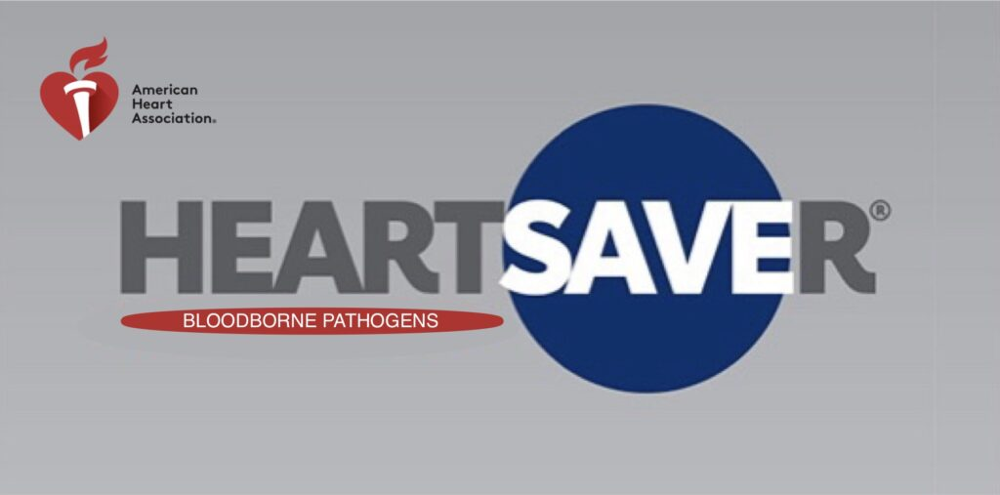

Students often mention knowledgeable instructors who keep CPR, BLS, ACLS, and PALS requirements clear.
Workplace And Public CPR
CPR And First Aid For Workplaces And Schools
AHA Heartsaver CPR, AED, first aid, and pediatric options that teach practical recognition and response for choking, opioid emergencies, stroke warning signs, seizures, asthma, heat illness, burns, and everyday injuries.

General Public Courses
Jump to Heartsaver options
Workforce, construction, childcare, health and fitness, hospitality, and general public CPR, AED, and first aid paths.

Heartsaver First Aid CPR AED For workplace and community responders who need practical first aid, CPR, and AED training. Topics include choking, naloxone awareness, FAST stroke recognition, seizures, asthma, burns, heat illness, and common injury response. View course options
Heartsaver CPR AED A focused CPR/AED path for people who do not need the first aid module. It reinforces adult and child choking response and why breaths may matter in opioid-related respiratory arrest. View course options Heartsaver First Aid First aid only, without CPR or AED. This course focuses on recognizing and responding to common injuries and illnesses such as bleeding, burns, allergic reactions, fainting, seizures, heat illness, and other everyday emergencies. View course options
Pediatric First Aid CPR AED For childcare, school, camp, and caregiver teams that need infant and child CPR, AED, choking, seizure, asthma, allergic reaction, heat illness, burn, and injury response practice. View course options
Bloodborne Pathogens Heartsaver Bloodborne Pathogens online course teaches employees how to protect themselves and others from being exposed to blood or blood-containing materials. This course is designed to meet OSHA requirements for bloodborne pathogens training when paired with site-specific instruction. View course optionsServing North And South Carolina
From the mountains to the coast, 910CPR helps healthcare teams, dental offices, schools, workplaces, and students meet real certification requirements with clear, organized classes.
What students mention
Renewing providers regularly describe the classes as organized, direct, and respectful of their time.
Reviewers commonly point to clear explanations, hands-on practice, and a class experience that feels manageable.
Group Training
Training for your team? We come to you.
No travel. No scheduling headaches. Your team already knows where to go.
Schedule On-Site Training
Just need a seat for yourself? Scroll down. We’ve got you covered.
View Upcoming Classes